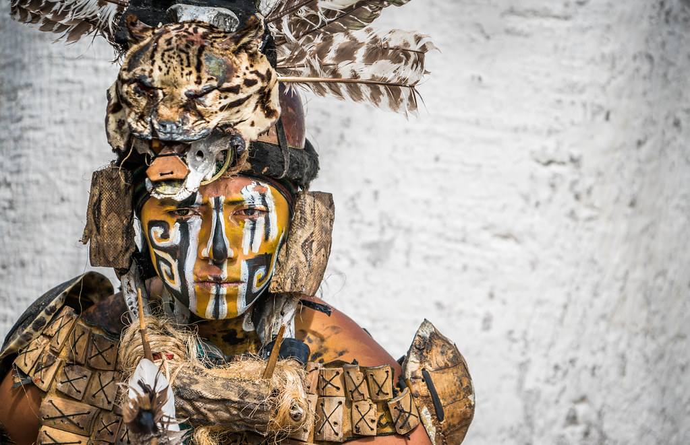
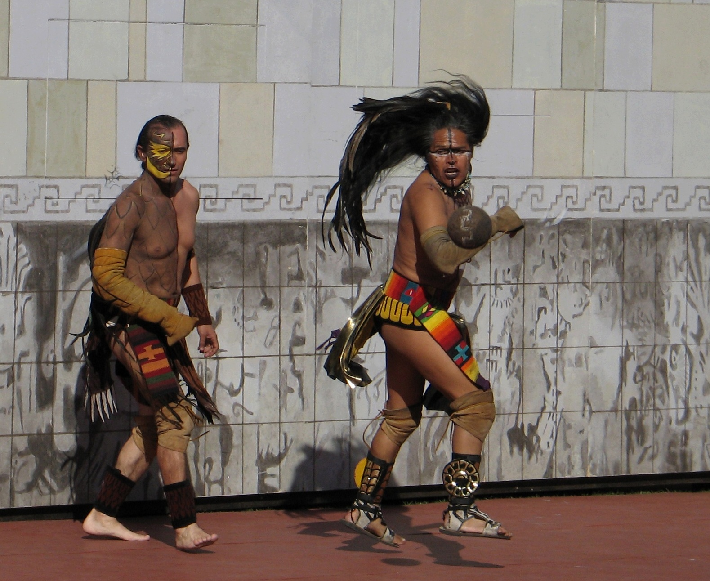

The Mayas belief of the gods and cosmos came from the ideology that nothing was ever born, and nothing ever died. They believed that when someone died they didn’t go to heaven or hell instead they believed that they embarked on a journey to reach a paradise which they referred to as Tamoanchan. This was the ultimate place of happiness which they believed to exist right here on earth. For these reasons the Maya did not see an issue with committing human sacrifices. Another big thing about their culture were the pyramids which represented temples and royal tombs. Many things such as ceremonies and sacrifices were held there. A very popular game which they played was poc-a-toc. This game represented much more than just game, it showed human struggle and helped see the way that Mayas viewed their existence.
Something which many know about the Maya were their calendar. Using just their knowledge on astronomy and math alone they built one of the most accurate calendars to date!
 